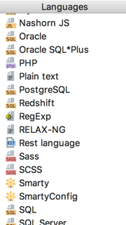

PhpStorm allows creating a temporary text file or a piece of code, and then just throw it away, when it's not needed any more.
Just press &shortcut:NewScratchFile;, or choose Tools | New Scratch File on the main menu, and then select the desired language:
